Terracota y rústicos.
Más que por su apariencia, los suelos rústicos y de terracota destacan por su alto valor artesanal.
Fundamentalmente, son de barro cocido, coloreado posteriormente en masa, e incluso esmaltados, que se usan tanto en interior como en exterior.
Como su propio nombre indica, este tipo de pavimentos buscan una estética rústica ideal para segundas residencias en la montaña y playa, o para bares y restaurantes cuyo interiorismo pretenda crear una atmósfera cálida y acogedora.
Te proponemos una amplia variedad de pavimentos y revestimientos rústicos, un producto de características primarias y puras, que permite ser esmaltado, procesado con sistemas manuales, semi-manuales o automáticos, dependiendo de la calidad deseada.
Marcas en el showroom
- Cerámicas A
- Ticsa Ceramic
- Cerámicas Elías
- Ferrés
- Fàbrica
- Matteo Brioni
Y si lo que buscas no está en exposición, lo buscamos en la Bagnoteca.
Novedades 202618

 Terracota y rústicos
Terracota y rústicosRevestimiento arcilla y resina TerraFloor Commercial - Matteo Brioni
Pensado para los proyectos más exigentes, el modelo TerraFloor Commercial de Matteo Brioni garantiza una gran durabilidad en espacios con gran afluencia de gente y en constante contacto con las inclemencias meteorológicas.
Un revestimiento compuesto por arcilla y resina, y reforzado con un tratamiento adicional. Esta opción de la firma italiana es ideal para las estancias más húmedas (suelos de baño y cocina) y entornos hosteleros.
TerraFloor Commercial está disponible en 14 colores, y en acabado Liso o Estructurado.

 Terracota y rústicos
Terracota y rústicosAcabado de arcilla y cal TerraCalix Smooth - Matteo Brioni
Inspirado en el icónico revestimiento de cal marroquí, Tadelakt, el modelo TerraCalix de Brioni es especialmente adecuado para su uso en paredes y techos.
Con la incorporación de cal en su composición original, conseguimos que junto a la arcilla que se utiliza como base, este modelo sea uno de los más resistentes de la colección.
La forma natural de mezclar ambos materiales le aporta una textura y estética única en cada aplicación, con un color 100% natural. Para quienes buscan un acabado personalizado, TerraCalix está disponible en cualquiera de las 14 tonalidades de la colección.

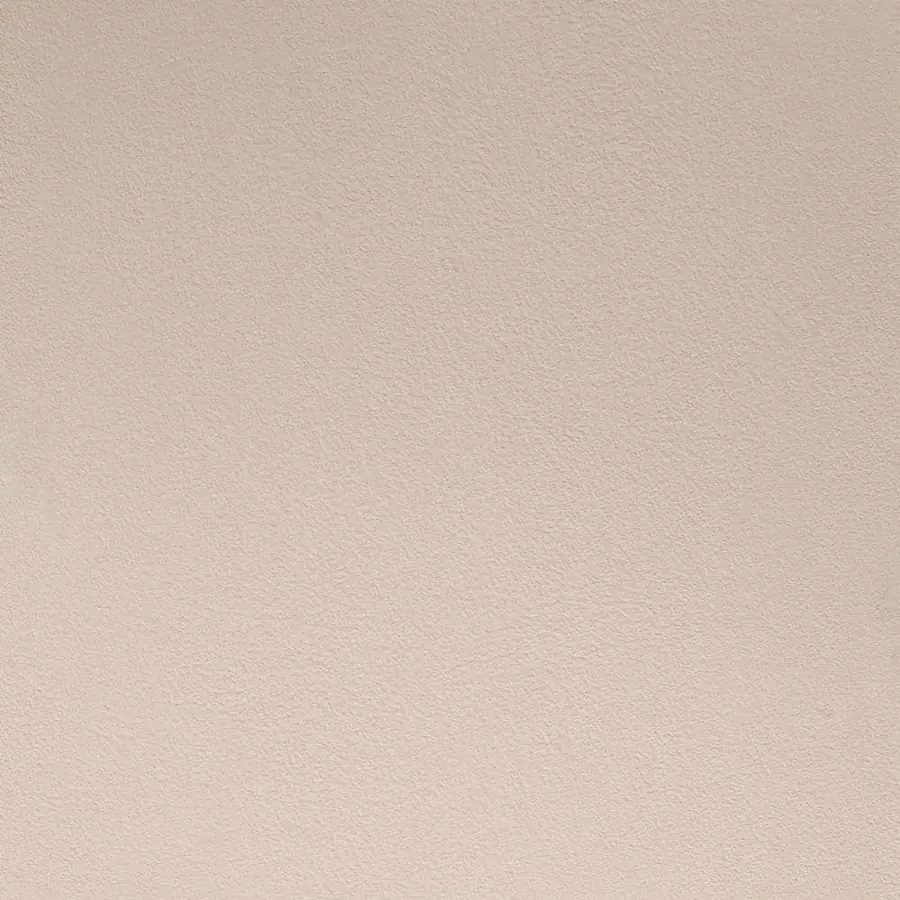
Terracota y rústicosPintura de arcilla natural TerraSilk - Matteo Brioni
Matteo Brioni cautiva con su modelo TerraSilk destinado a paredes y techos. Una alternativa refinada, para superficies extensas, que nos recuerda a la seda natural en sus acabados.
Pintura elaborada con arcilla natural, de tonalidades neutras y tierra, que se transforma en la alternativa más económica y práctica para espacios efímeros como stands y exposiciones.
Su aplicación en brocha se ofrece en versión lista y estructurada, ambas pueden ser personalizadas según la preferencia del cliente y sus requerimientos. Esta última, ofrece una versión optimizada mucho más resistente al admitir tratamiento hidrófugo y resistente a manchas.
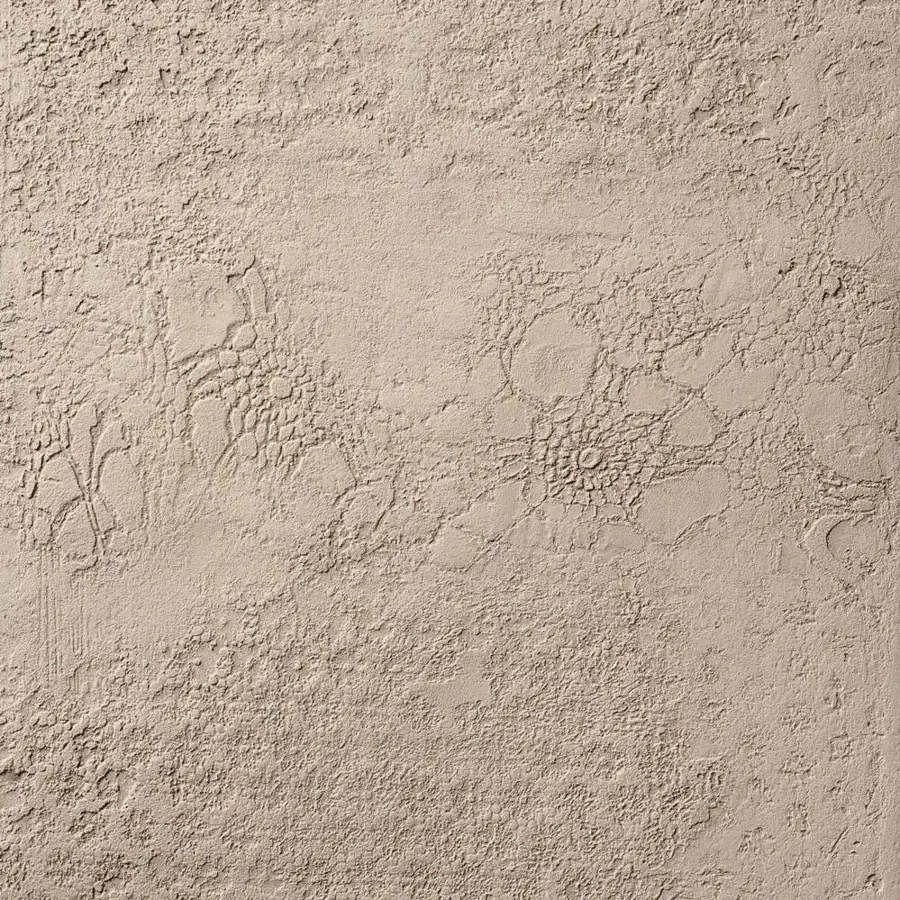
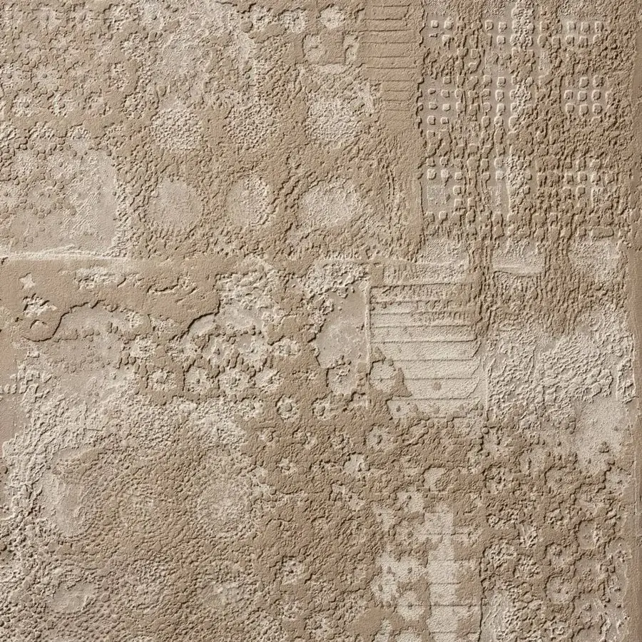
Terracota y rústicosArcilla TerraEvoca - Matteo Brioni
El modelo TerraEvoca se presenta como una auténtica obra de arte. Una pieza artesanal que funciona como parte de la decoración, disponible en dos variedades llenas de carácter.
Con arcilla natural como elemento base, su condición multicapa hace que sea totalmente personalizable y que se pueda añadir piedras, colores, paja…todo un conjunto de detalles que aportan volumen y genuinidad.
TerraEvoca es una alternativa ideal para cubrir superficies verticales de espacios interiores. Su uso directo se puede realizar en paredes, acabados rugosos o paneles, siempre que no exista contacto con agua ni exposición a humedad ascendente.
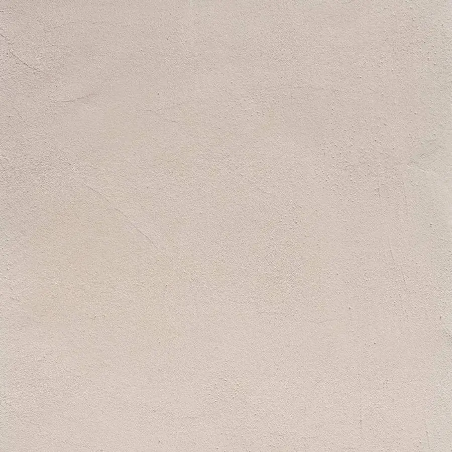
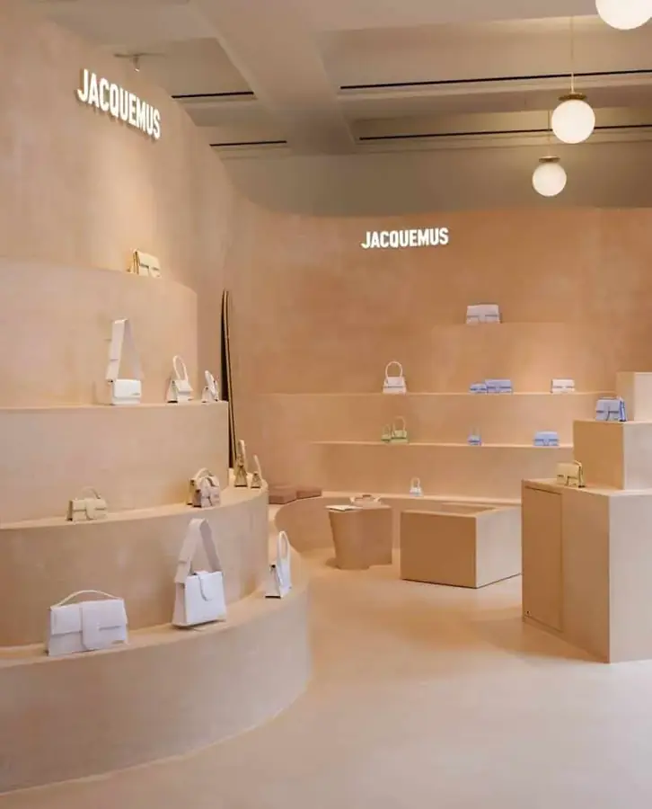
Terracota y rústicosRevestimiento vertical TerraTon Wall - Matteo Brioni
Elaborado a base de arcilla natural, cemento y aglomerantes minerales, TerraTon Wall es un revestimiento en vertical que combina belleza y resistencia.
Su composición única permite una alta adherencia a cualquier superficie, incluso en exteriores, superando cualquier inclemencia meteorológica.
Siendo perfecto para crear atmósferas cálidas en interiores, este modelo de Brioni se convierte también en una excelente opción para revestir fachadas con elegancia y cierta esencia envejecida.
Disponible en acabado liso y estructurado, e infinidad de tonalidades, el modelo en grano fino de la firma italiana presenta una opción reforzada “TerraTon Plus Wall”.
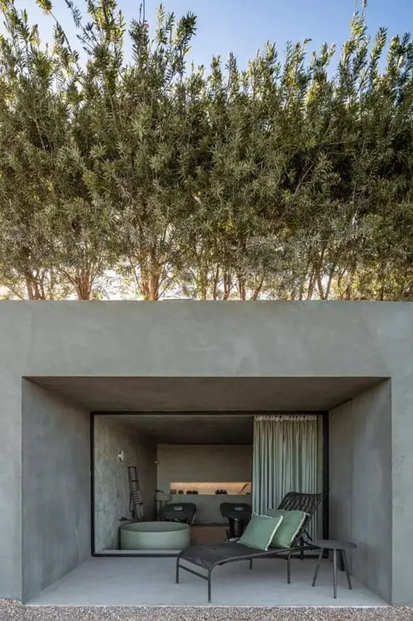
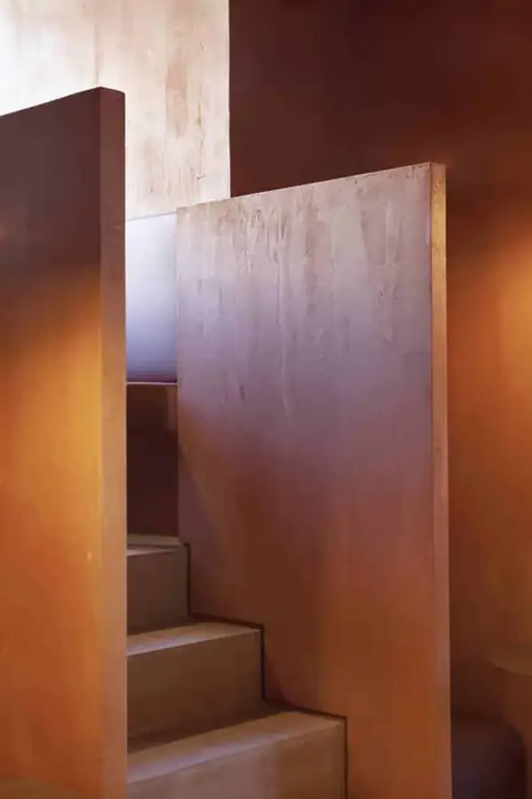
Terracota y rústicosTerraTon Plus Wall - Matteo Brioni
Matteo Brioni ofrece una versión reforzada de su mítico TerraTon Wall. Un modelo optimizado con polímeros específicos para aquellas superficies verticales que requieran mayor resistencia y durabilidad.
Esta versión de arcilla natural y yeso mineral es perfecta como pavimento de paredes tanto interiores como exteriores en contacto con el agua y la humedad. Además de una apuesta segura, Plus Wall crea un concepto único en cada espacio.
Gracias a la mezcla de sus distintos componentes, la oferta cromática nunca es la misma. Terraton se acopla a la superficie de forma sinuosa consiguiendo un resultado personalizado en cada una de ellas.
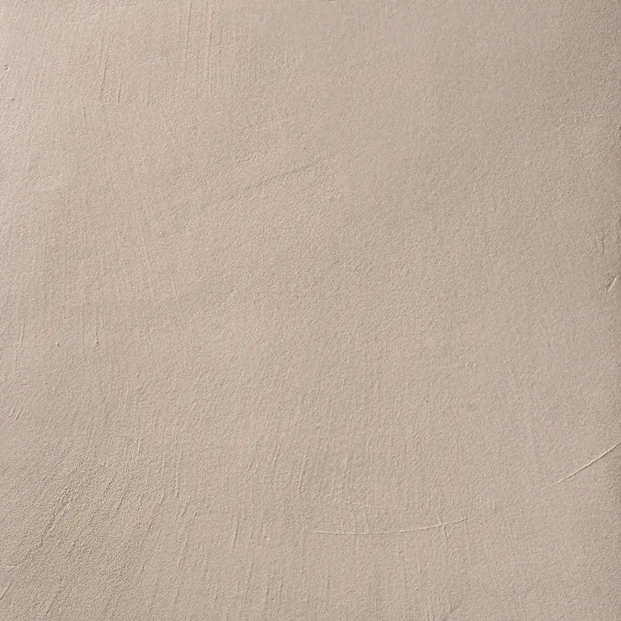
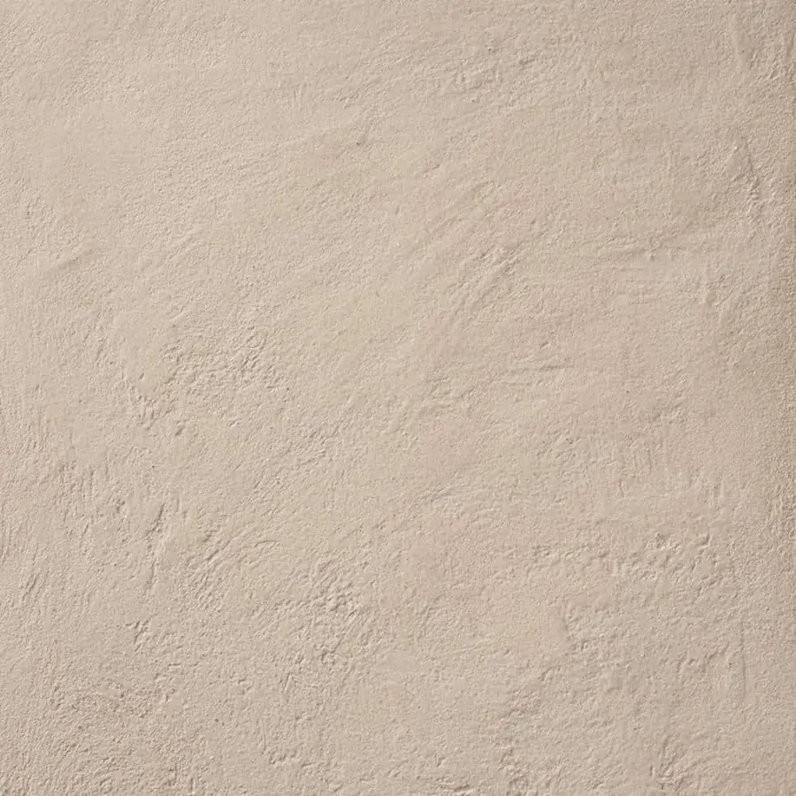
Terracota y rústicosArcillas de grano fino TerraTon Floor - Matteo Brioni
TerraTon Floor es la propuesta de Mattero Brioni para los suelos interiores más exclusivos. Una mezcla de arcillas y minerales en grano fino ideal para superficies horizontales sometidas al agua y expuestas al público.
En este último caso, ante la necesidad de una gran resistencia al desgaste se puede optimizar con su revestimiento para suelos “TerraFloor Commercial”, una mezcla de arcilla y resina con tratamiento adicional.
El modelo para suelos de la firma italiana, aunque disponible en las 14 tonalidades de la colección, permite ser totalmente personalizada eligiendo el color, la textura y la incorporación de algún material extra que lo haga único.

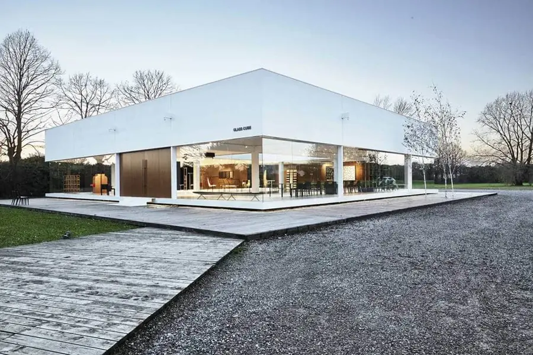
Terracota y rústicosRevestimiento arcilla y resina TerraFloor - Matteo Brioni
El referente arquitectónico italiano presenta «TerraFloor», un modelo de revestimiento para suelos interiores que se compone de una base de resina y arcilla natural.
Gracias a las altas calidades de los materiales elegidos, esta alternativa es perfecta para superficies que, debido a su naturaleza, están en constante contacto con agua y humedades.
De acuerdo con las demandas del ambiente, el modelo se muestra en su versión inicial para áreas residenciales y, en su versión reforzada para entornos comerciales y de restauración. Estas dos versiones se encuentran disponibles en textura Lisa y Estructurada.
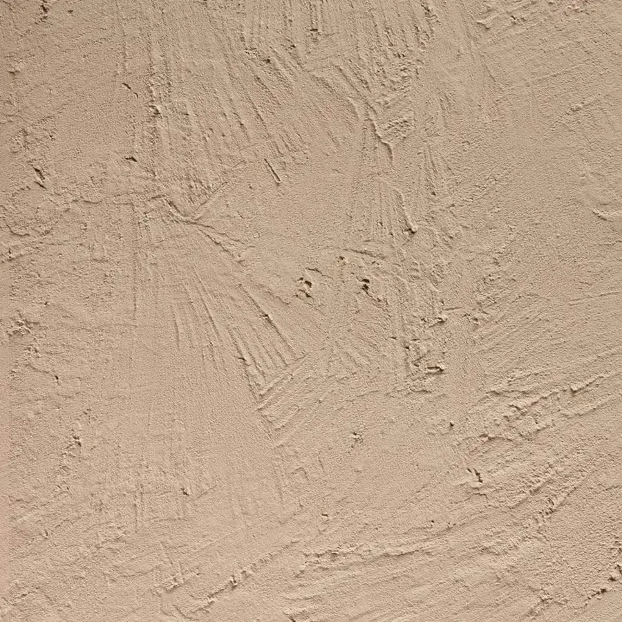
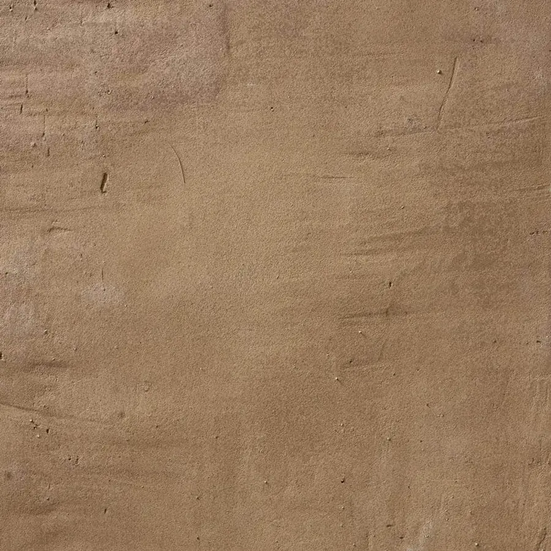
Terracota y rústicosArcilla de grano grueso MultiTerra Plus - Matteo Brioni
Viste, a la vez que proteges, tus espacios con MultiTerra Plus. Un revestimiento de arcilla de grano grueso reforzado con polímeros específicos que combina resistencia y elegancia.
Su fórmula especial hace que sea la opción ideal para zonas de alto tránsito y ambientes húmedos, como paredes y techos de baños y cocinas, ofreciendo una protección duradera y un acabado sofisticado.
Aunque es totalmente personalizable, la colección se presenta en 2 versiones con texturas distintas: Lisa y Estructurada (Wabi solo para pared). Ambas consiguen dotar al espacio de un aura en tendencia y con un enfoque artesanal.
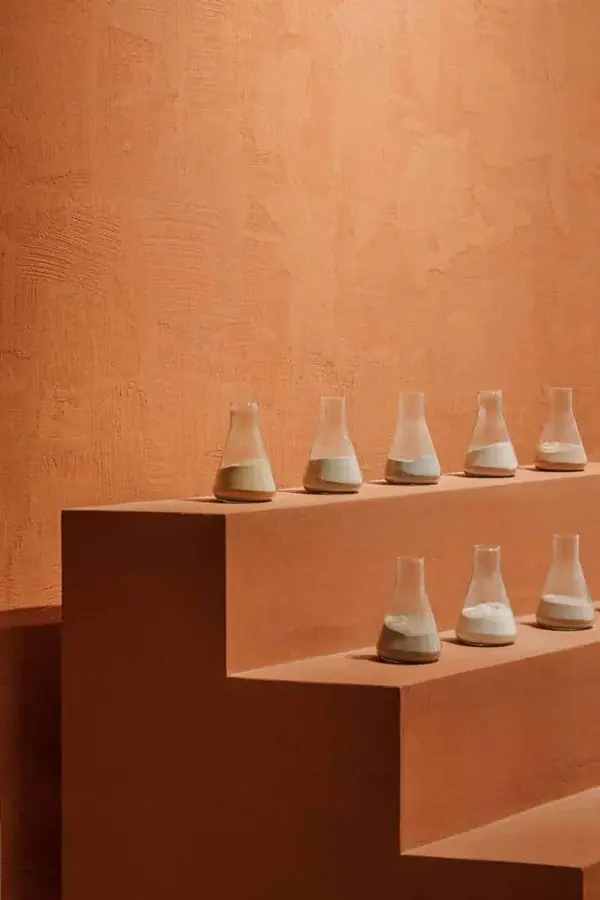
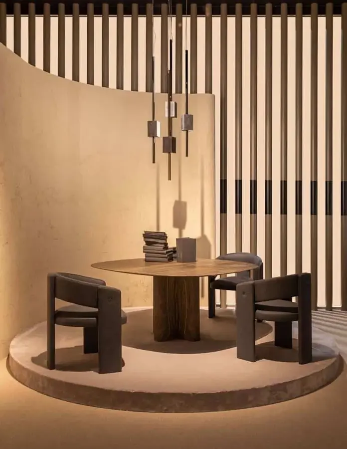
Terracota y rústicosArcilla grano fino TerraVista Plus - Matteo Brioni
TerraVista Plus es la versión reforzada del icónico revestimiento de arcilla de Matteo Brioni, diseñado para ofrecer mayor resistencia en ambientes exigentes.
La opción Plus se elabora a partir de una mezcla preparada en seco de arcilla 100% natural y polímeros específicos, aportando mayor durabilidad ante agente externos como el agua o la humedad.
Disponible en dos texturas, Liso y Estructurado, la versión Plus se diferencia de la original por tener un tono base más oscuro, permitiendo el ajuste en color al añadir un pigmento natural aclarante.
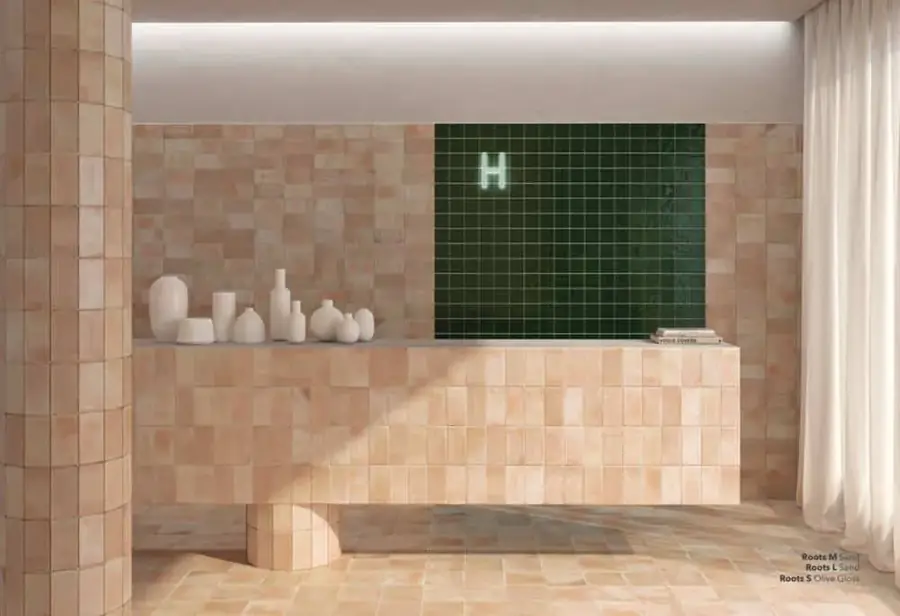
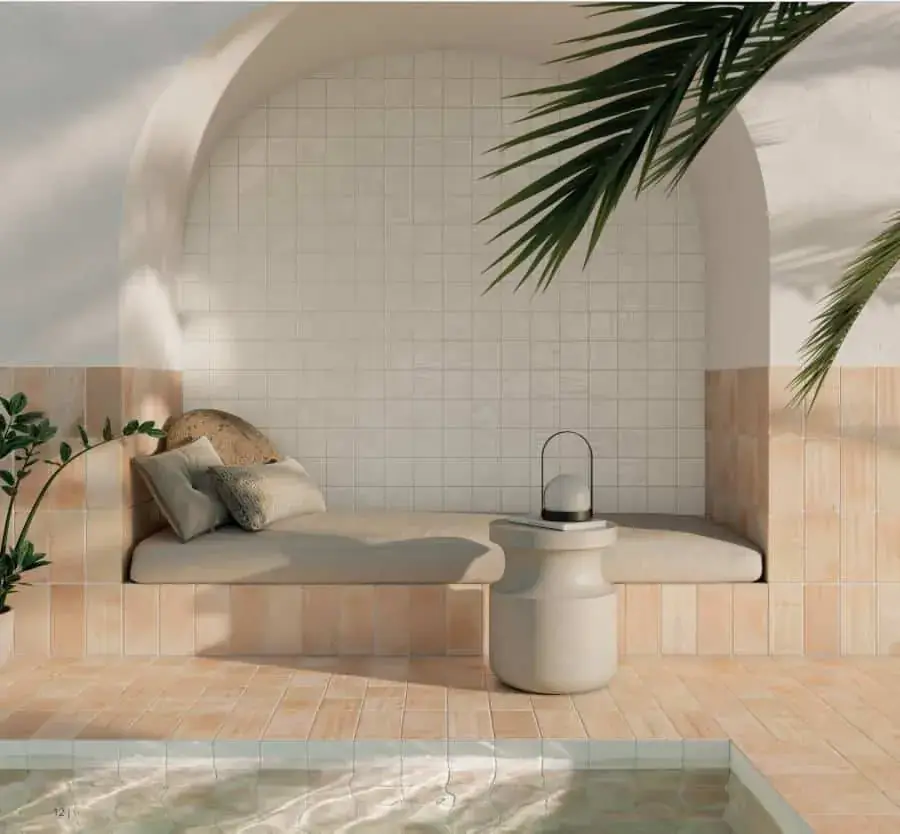
Terracota y rústicosSuelos terracota para exterior e interior Roots – WOW Design
Piezas artísticas, orgánicas, que evocan la naturaleza y la inevitabilidad del pasar del tiempo que, inevitablemente, deja huella en todo eso que toca.
Los suelos de terracota Roots son la perfecta solución para espacios, de interior y exterior, que necesiten un toque de distinción.
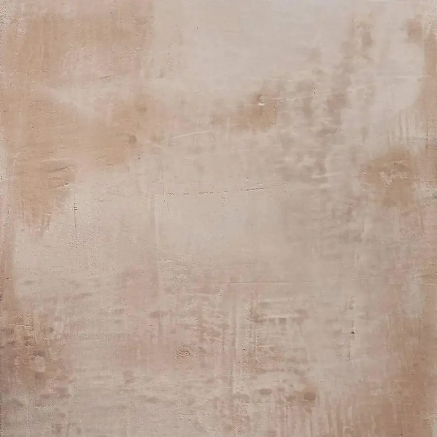
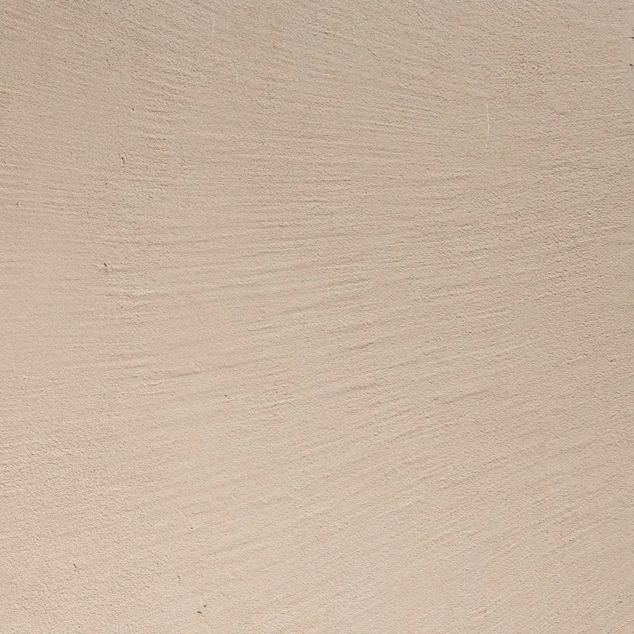
Terracota y rústicosArcilla de grano fino TerraVista - Matteo Brioni
TerraVista es el resultado de la exquisita selección de materiales hecha por Matteo Brioni para su revestimiento de paredes verticales en acabado tierra.
Pura elegancia para los espacios interiores más exclusivos. Estas palabras resumen a la perfección la esencia de este modelo que combina las más altas calidades con un diseño rompedor.
Compuesto por arcilla 100% natural de grano fino, su mezcla preparada en seco permite una fácil aplicación, aportando suavidad visual a paredes y techos.
Disponible en tres texturas, Liso, Estructurado y Wabi, todas sus variantes se presentan en 14 tonalidades cálidas totalmente personalizables.
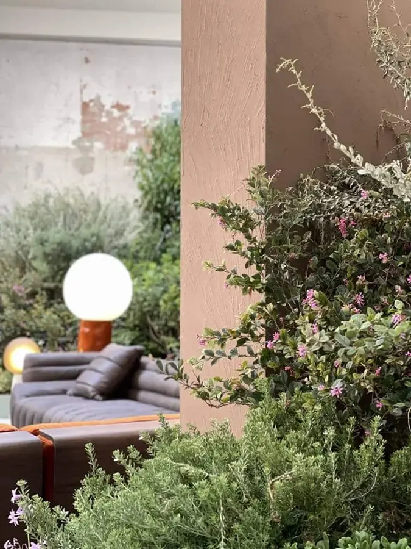
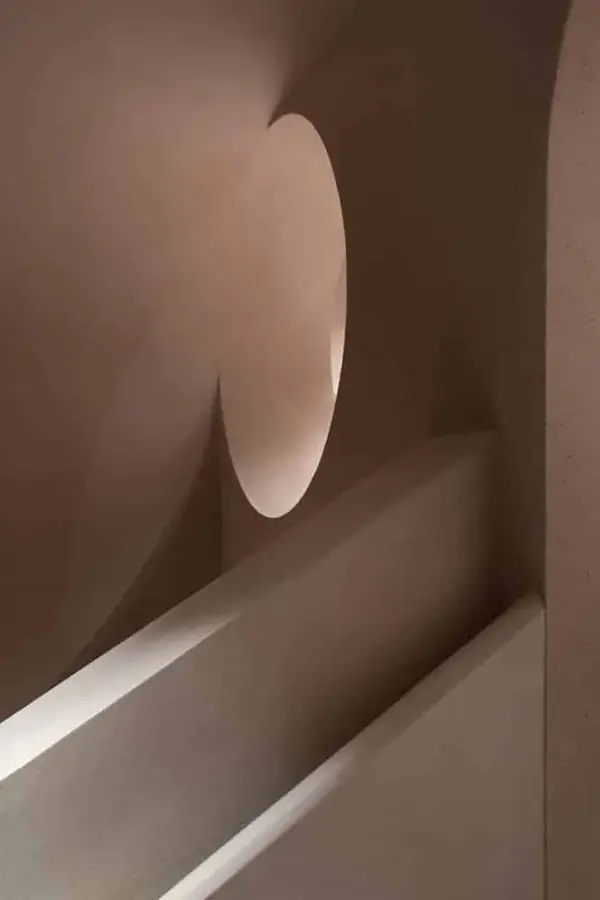
Terracota y rústicosArcilla de grano grueso MultiTerra - Matteo Brioni
Matteo Brioni acerca la esencia de la naturaleza a las estancias interiores con su revestimiento de arcilla en grano gueso, MultiTerra.
Elaborado a partir de minerales puros, su origen artesanal ofrece espacios genuinos, aunque con algo en común: una personalidad irrepetible.
En línea con la versatilidad que ofrece la tierra, su variada paleta de colores (sin pigmentos añadidos) se adapta íntegramente al territorio brindando soluciones que dan un toque exclusivo al espacio.
Desde acabados lisos hasta texturas más rústicas, MultiTerra está disponible en versión Liso, Estructurado y Wabi.
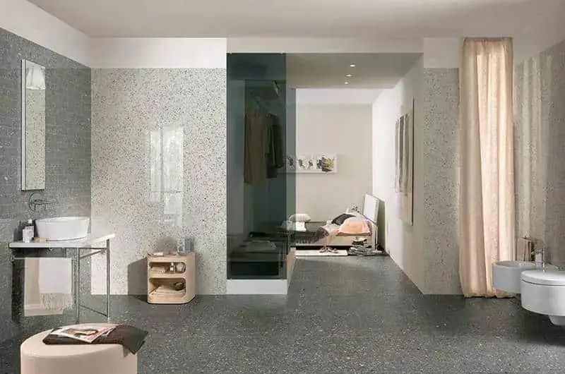
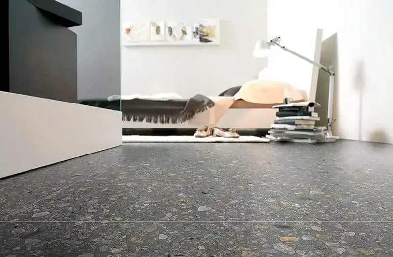
Terracota y rústicosPavimentos terrazo Le Veneziene – Cerim
La firma Cerim nos presenta una interesante reinterpretación del clásico terrazo, llamado en Italia suelo veneciano.
Sus innumerables grafismos y colores, otorgan a esta nueva colección de terrazos LE VENEZIANE, una riqueza estética muy sugestiva.
A lo anterior se le une una completa variedad en cuanto a formatos y grosores, y los nombres, identificados a partir de varios barrios de la ciudad de Venecia.
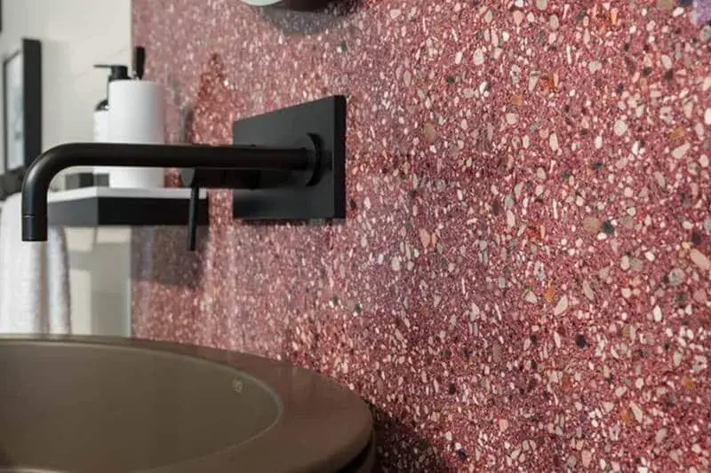
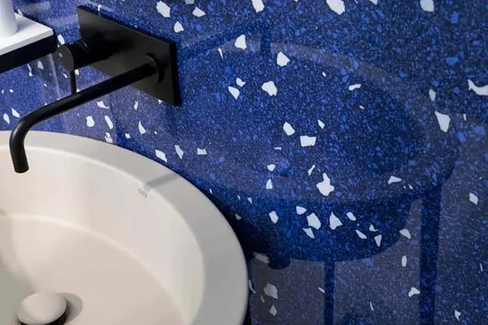
Terracota y rústicosPavimentos y revestimientos terrazo Artwork – Casamood
Casamood, una firma de pavimentos y revestimientos que destaca por la calidad y modernidad de sus propuestas, se une a la tendencia del terrazo con esta nueva colección, cuyo nombre, Artowrk, nos explica muchas cosas.
Texturas muy estilizadas, combinación de geometrías antes impensables, 12 variantes decorativas, junto a una sugestiva propuesta en cuanto a colores (contraste de tonos blancos – grises, y blancos con negros), otorgan a Artwork ese toque estético experimental habitual en esta afamada marca de materiales para suelos y paredes.
Compruébalo tú mism@.
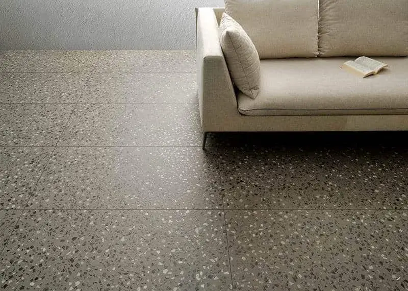
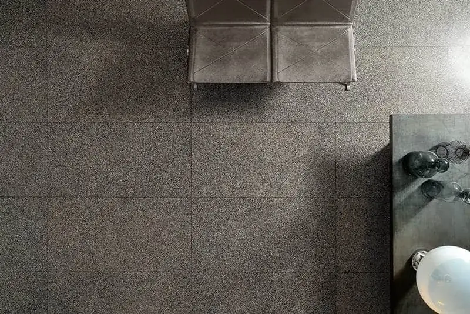
Terracota y rústicosPavimentos porcelánicos Terrazzo - Coem
Una de las tendencias más destacables en pavimentos y revestimientos en 2018, es la vuelta del terrazo, una material que en Italia (país donde se gesta su reinvención) es llamado veneciano, como recuerdo a la ciudad en cuyas calles se utilizó allá por el sXV.
En este orden, La firma Coem, te presenta su colección Terrazzo; compuesta por una gama de cuatro colores y dos granometrías diferentes, una con más énfasis en el relieve y otra más fina y lisa, capaz de aportar un toque estético interesante tanto en suelos como en paredes de baños y cualquier otro espacio.
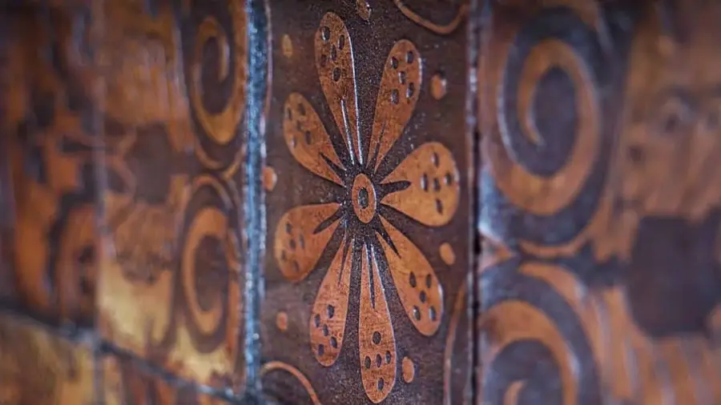
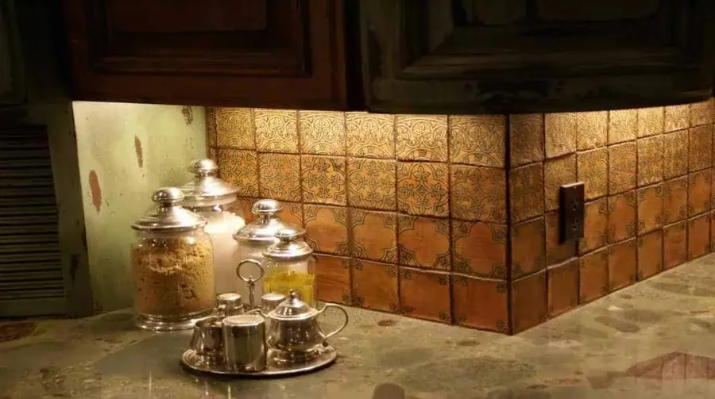
Terracota y rústicosRevestimientos Terracotas rústicos - Ticsa
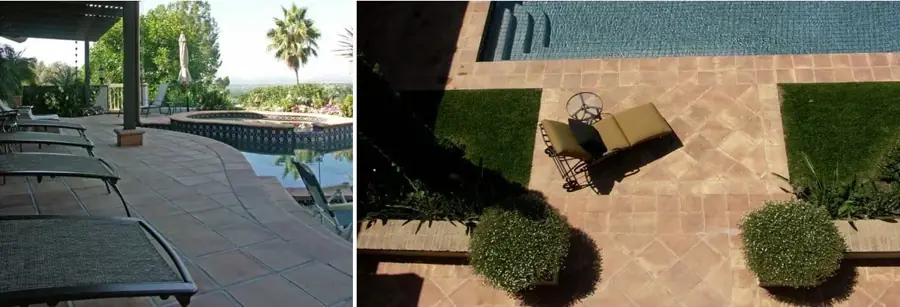
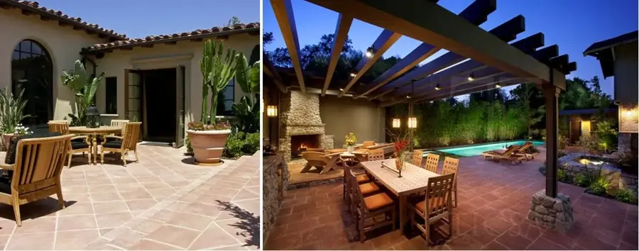
Terracota y rústicosBaldosas antideslizantes para piscinas y exteriores - Ticsa
La firma TICSA propone dos series de baldosas antideslizantes para piscinas y exteriores, sin eflorescencias, fabricadas artesanalmente, resistentes al agua clorada y salada, y de estética elegante: La serie BASIC y la serie PAVÉ.
La primera la tienes disponible en hasta seis tonos diferentes. Destacamos su excelente calidad-precio, derivada de una fabricación a base de arcillas locales. Baldosas de barro cocido, óptimas para instalar en el exterior.
Por su parte, la colección PAVÉ de baldosas rústicas de color natural, son perfectas como pavimentos de exterior en zonas de acceso para coches. Esta colección la tienes disponible en dos texturas diferentes, una para suelos de jardines y terrazas; y otra para aplicar en suelos de bodegas o espacios similares.